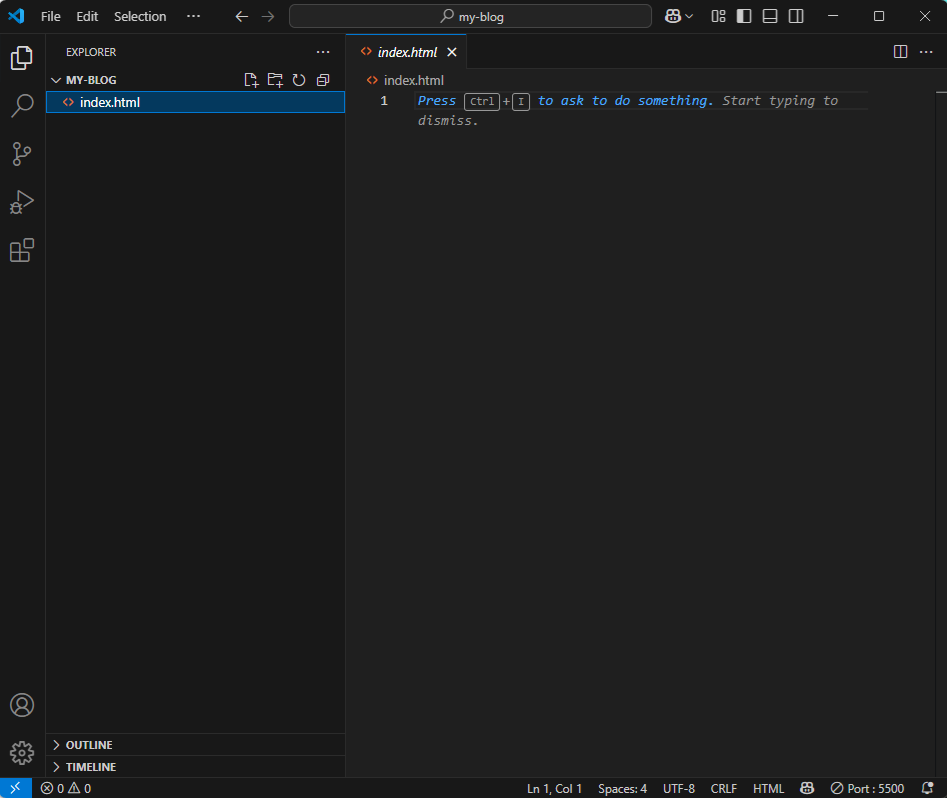
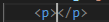
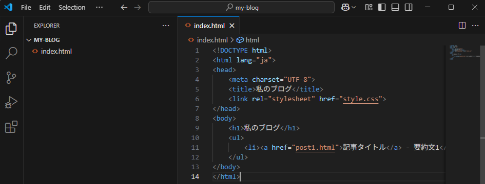

カテゴリ:ブログ作成～公開まで～
投稿日：2025年5月6日
前回ようやく「ブログ作りながら勉強したいんです！」という本題をChatGPTに伝えることができました。今思えば、いきなり本題言えばよかった。うん。
ということで今回は、実際にブログの「顔」となるトップページ、index.htmlを作ってみます！
とりあえず教えてもらった通り、VS Code（略してVSC）を開いてindex.htmlをポチッと。
実際の画面はこんな感じ。さっそく入力してみるとすぐにエディタの利点が！
テキストドキュメントでもコードは入力できますが、エディタの利点はコードの入力補助をしてくれる所。
まず最初にファイル形式をブラウザに伝えるコードを書くようなのですが、<を入力しただけで候補に!DOCTYPEと出てきます。
そこでエンターキーを押すと、
<!DOCTYPE html>と自動で入力されます。
さらにこの文章がそうなのですが、本文を書く際に<p>タグを初めに置いたら終わりに</p>と入力する必要があるのですが、
pと入力しただけで先頭と末尾のタグを入力してくれます。便利すぎる！！
そんなこんなで入力補助を活用しながら入力が終わりました。
Ctrl+Sで保存したあと、index.htmlを開いてみます。

おー。殺風景of殺風景。回線が悪かった時とかにたまにこういう表示になりますよね。
今HTMLファイルしか作成していないので、文字のスタイルなどを決めるCSSファイルがない状態です。
もしかしたらHTMLファイルは読み込めているけど、CSSを読み込めないとこうなるのかも！
これでindex.htmlは作成できたので、今回はここまで。
次回はstyle.cssを作成して文字のスタイルなどを変えていきます。
カテゴリ:ブログ作成～公開まで～